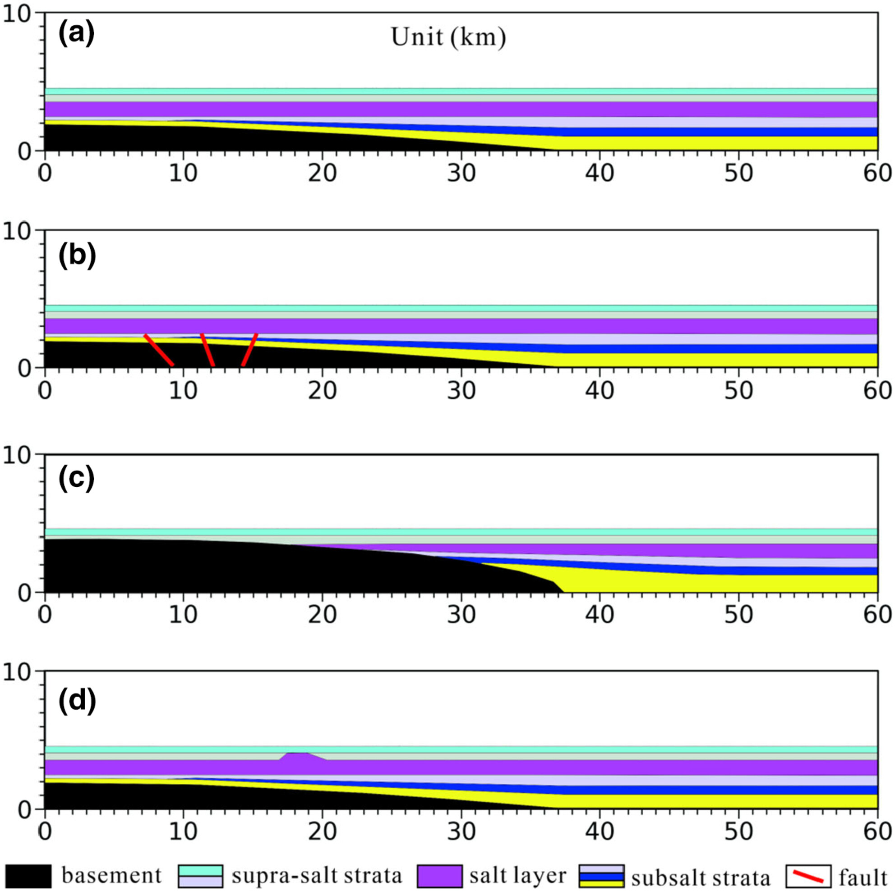
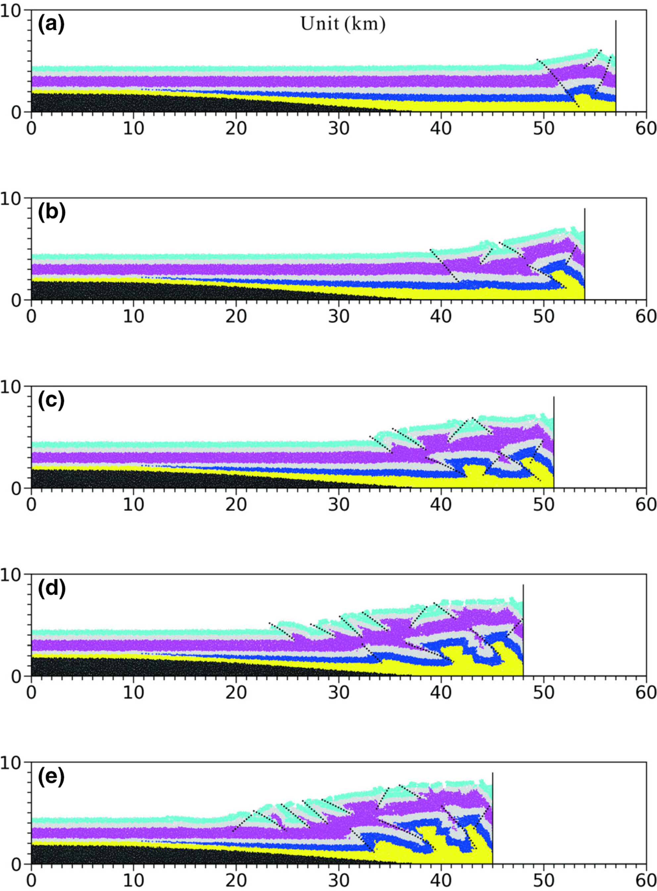
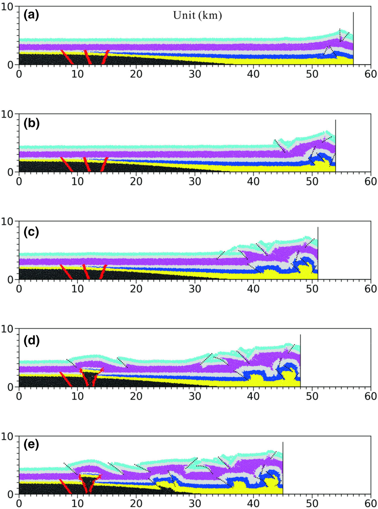
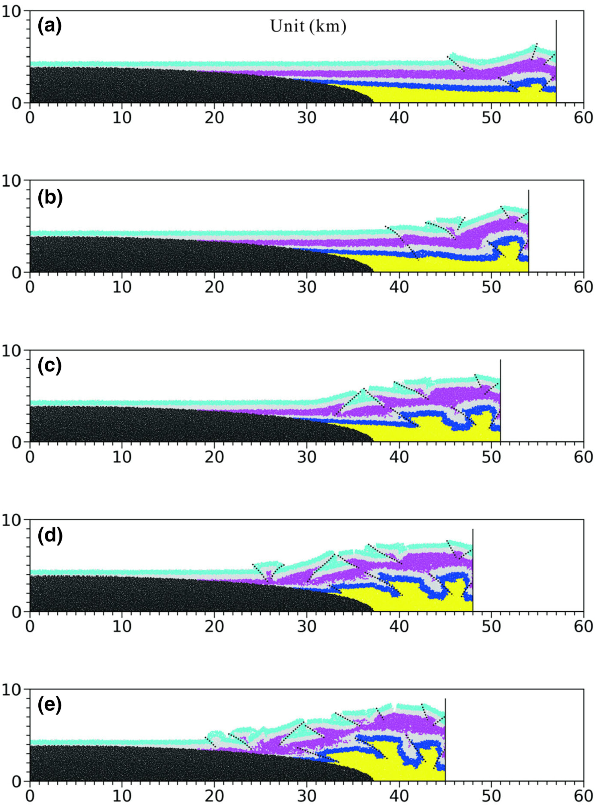
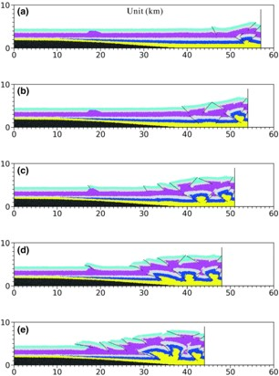

库车坳陷为中国西部地区重要的含油气盆地，盐构造变形十分复杂，在不同的构造带和同一构造带的不同位置均有较大差异，其中基底先存构造在盐构造变形过程中扮演了重要角色。利用最新的二维、三维地震资料，结合离散元和有限元数值模拟方法，研究了先存构造的类型、分布及其对盐构造的控制作用。地震资料分析表明，库车坳陷发育的先存构造主要为基底断裂、古隆起、盐下斜坡和早期被动盐底辟。基底断裂主要分布在克拉苏和秋里塔格构造带，控制着中新世压盐构造的发育位置和变形样式；基底断裂的变形样式和活化程度的差异，导致了不同构造带盐构造的多样性。古隆起主要包括温苏古隆起、西秋里塔古隆起、新河古隆起和雅哈—轮台古隆起；古隆起限制了盐层的原始沉积范围和后期变形空间，导致库车坳陷西部阿沃特凹陷不同构造层逆冲作用十分强烈。古隆起的非均匀空间分布，也促进了坳陷西部区域大规模走滑转换带的发育。盐下斜坡主要位于西秋里塔格低隆起的北缘，阻碍了盐岩向南流动，在斜坡边缘形成较大规模盐丘，这些盐丘的大小与盐下斜坡的坡度密切相关。早期被动盐底辟主要发育于库车坳陷西部的却勒和博孜敦地区，在中新世以来的挤压期优先活动，形成了一个刺穿式盐推覆体。数值模拟结果表明，在盐构造变形过程中，先存构造对应力-应变分布具有较强的控制作用，先存构造经常造成最大主应力和剪应力应力集中，进而诱发盐构造的优先形成。地震资料和数值模拟结果表明，基底构造的空间分布不均一性是库车坳陷SN向构造分带和EW向构造分段的重要因素，也是局部刺穿型盐构造形成的重要诱因。 (Yang et al.,2024)。
Yang, K., Qi, J., Xu, L., Yu, Y., Sun, T., Shen, F., … & Zhao, H. 2024. Influence of preexisting structures on salt structures in the Kuqa Depression, Tarim Basin, Western China: Insights from seismic data and numerical simulations. Basin Research, 36(1), e12850.题目
Influence of preexisting structures on salt structures in the Kuqa Depression, Tarim Basin, Western China: Insights from seismic data and numerical simulations
Keji Yang1, Jiafu Qi2,Liangwei Xu3*, Yanqiu Yu1, Tong Sun4, Fangle Shen5, Li Peng6, Ji Lv6, Hanting Zhao 6
- Hebei Key Laboratory of Strategic Critical Mineral Resources, College of Earth and Science, Hebei GEO University, Shijiazhuang, China
- State Key Laboratory of Petroleum Resources and Prospecting, College of Earth and Science, China University of Petroleum (Beijing), Changping, Beijing, China
- School of Resources and Environment, Henan Polytechnic University, Jiaozuo, China
- Research Institute of Exploration and Development, Dagang Oilfield, CNPC, Tianjin, China
- Huaxin College of Hebei GEO University, Shijiazhuang, China
- Bureau of Geophysics Prospecting Inc., CNPC, Research Center of Geology, Zhuozhou, China
摘要
The preexisting structures that developed in the basement and subsalt strata play a key role in the salt structural deformation in the Kuqa Depression, Tarim Basin. The characteristics of preexisting structures and their controls on the salt structure are investigated via the latest three-dimensional seismic data and numerical modelling. The results show that the preexisting structures that developed in the Kuqa Depression mainly consist of basement faults, palaeouplifts, subsalt slopes and early passive salt diapirs. Basement faults are mainly distributed in the Kelasu and Qiulitag structural belts and control the position of development and deformation style of the Miocene compressive salt structure. The differences in styles and reactivation degrees of basement faults lead to great diversity in the salt structure. The palaeouplifts mainly include the Wensu, western Qiulitag, Xinhe and Yaha-Luntai palaeouplifts. The original sedimentary range and later deformation space of the salt layer are limited by the palaeouplift, resulting in strong salt thrusting in the Awate sag in the western part of the Kuqa Depression. The heterogeneous spatial distribution of the palaeouplift promoted the development of regional strike-slip transform belts. Subsalt slopes are located mainly on the northern edge of the western Qiulitag low uplift and block the southward flow of the salt, causing the salt to form salt domes; the size of these domes is closely related to the subsalt slope. Early passive salt diapirs mainly developed in the Quele and Bozidun areas of the western Kuqa Depression, and they were preferentially active during the compression period, inducing the formation of a piercement salt nappe. Numerical modelling revealed that the preexisting structure strongly controlled the stress–strain distribution during the deformation of the salt structure. The spatial distribution heterogeneity of the basement structure is an important factor in the structural zonation along the north–south strike and segmentation along the west–east strike in the Kuqa Depression, as well as an important inducer of the piercement salt structure.

FIGURE 13 Model settings of the discrete-element numerical simulation experiment. (a) Model A—Basic model; (b) Model B—Preexisting fault model; © Model C—Preexisting palaeouplift model; and (d) Model D – Preexisting salt diapir model. All the models are 60 km long and 4.5 km high and are extruded from the right edge with a 15 km compressive distance. The elements are bonded to the base and sidewalls, and the gravitational field is calculated.

FIGURE 14 Experimental process of Model A. From (a) to (e), the compressive distance is 3, 6, 9, 12 and 15 km respectively. On the whole, the structural deformation of each structural layer gradually propagates from right to left, and the propagation distance of super-salt deformation is larger than that of the subsalt deformation.

FIGURE 15 Experimental process of Model B. From (a) to (e), the compressive distance is 3, 6, 9, 12 and 15 km respectively. The preexisting faults away from the extrusion edge begin to revive when the extrusion reaches 12 km and finally, form a salt diapir at the top of the basement faults.

FIGURE 16 Experimental process of Model C. From (a) to (e), the compressive distance is 3, 6, 9, 12 and 15 km respectively. Due to the barrier of the preexisting palaeouplift, the subsalt faults are strongly thrust, and a piercement salt structure is formed on the right edge of the palaeouplift.
